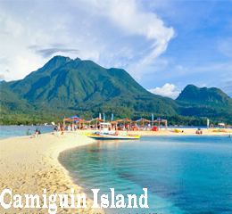

Known to be the largest city in the Philippines Davao city. This is also the hometown of our newly elected President of the Philippines Rodrigo Duterte. Well Davao city has a lot of showcase when we talk about tourism. Davao is a home of the Philippine Eagle and known as the Durian Capital in the Philippines since this is the city where you can find varieties of Durian. The Samal Island is one the most visited tourist spots in the spots in the City when it comes to relaxation and recreational activities. In fact there are around 70 resorts and world class accommodations that are being offered in Samal Island.
Tourist Destination
Tawi-Tawi
According to historians, early traders used to call the islands "jaui-jaui" (far away).Tawi-Tawi is the Philippines' southernmost province; it's one of the places in the country that is farthest from the capital Metro Manila. This distance allowed Tawi-Tawi to retain its cultural richness in aspects such as religion, food, and local traditions. Tawi-Tawi is famous for they called sacred mountain the 'Bud Bungao' locals make it a habit to climb the mountain believing that it can heal diseases.

Camiguin Island
Camiguin White Island is a sandbar of white powdery sands that is surrounded by clear turquoise water which is just one of the many sandbars in the entire 7,107 islands of the country. Also camiguin is famous for their diving sites if you want to see something different try diving to see their giant clams. Sunken cemetery is also located at Camiguin the sunken cemetery is the remains of that havoc which had once beset the island and almost swept it out of existence. It is represented by a huge cross of what have been old chapels..
Explore MINDANAO
Mt. Apo
Mount Apo is a much known destination for mountain climbers and adventure seekers out there. There are many rivers, boulders and forests along the way. It is considered as the most technical and interesting trail because of its narrow and different type of trails. Boulders of Mt. Apo is one of the famous feature which would led to a breath taking experience by ascending the crater of sulfur deposits and vents. Also there are seven different peaks that can be seen at the summit of Mt. Apo and peak hopping is the best thing to do.
Enchanted River
Hinatuan River or enchanted river an amazing hidden place for many it is located at Surigao del Sur 8 hours drive away if your are coming from Davao city. Enchanted River is the spot that draws so many tourists, local and foreign because of its natural spring, the color of glistening sapphire and emerald water. This majestic blue lagoon is safely nestled in a forest within a mountainside.
Sohoton, Surigao del Norte
If you were mesmerized by the beauty of Britannia Islands then all the more will you be enthralled by Sohoton. Sohoton is packed with lush greens, diverse coral reefs and clear waters. Every tourist would be in awe with its featured pristine lakes, hidden coves, clean lagoons and out of the ordinary underwater wildlife.
Mabua Pebble Beach
Mabua Pebble Beach, located 30 minutes from the city center of Surigao, is unique among many of the Filipino beaches due to its multitude of smooth white pebbles that make up its shoreline.While most beaches are formed through the movement of sediment influenced by the wind, waves and currents, Mabua Pebble Beach's unique composition was most likely formed by very strong forward swashing waves that forced the pebble material to be driven onshore, and weaker return swashing waves that caused the material to be deposited.